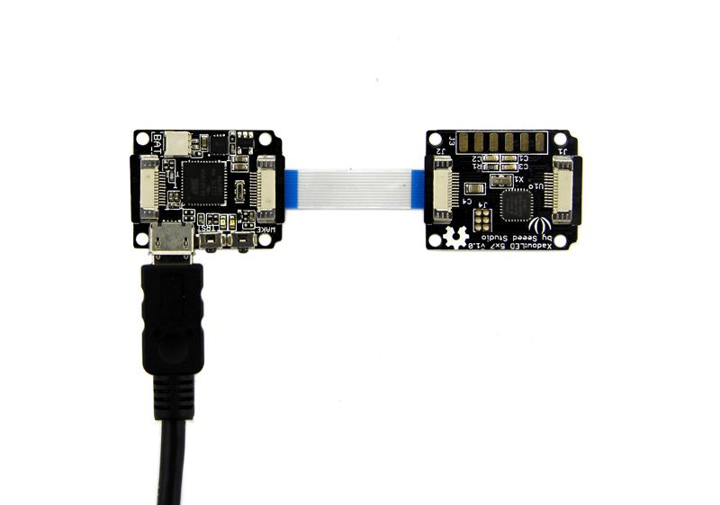
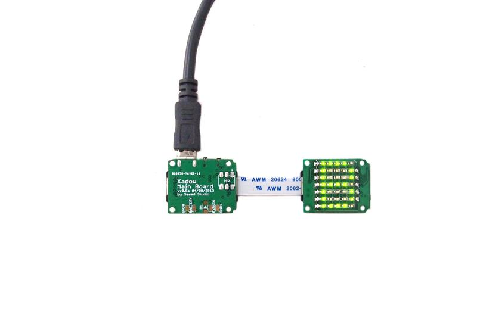

The Xadow LED 5x7 contains two parts: an LED panel and an LED controller. The LED panel is a 5x7 Monochrome matrix. The LED controller is a control module for controlling the LED panel using 12 I/O pins of the Atmega168PV. You can send command to LED controller through I2C interface. Then let the led controller to control the LED display. For example, display alphabet and number, or enter sleep mode to reduce the consumption.
Model: COM01300P
As described in the introduction, the LED can display alphabet and number. Next we will show you the interesting demo.
The Hardware installation as shown below:

Note: when connect Xadow LED 5X7 to Xadow Main Board, you should concern about the connection direction. The connection method is that the unfilled corner of one Xadow module need to connect to the right angle of another module(see four corners of each Xadow module).
The test code for displaying string or charring:
#include "Wire.h"
#define XADOW_DEBUG 1
#define LEDAddress 0x04
#define DISP_CHAR_5X7 0x80
#define DISP_STRING 0x81
#define SET_DISP_ORIENTATION 0x82
/*Marco definitions for the display orientation of the LED matrix*/
#define RIGHT_TO_LEFT 0
#define LEFT_TO_RIGHT 1
#define POWER_DOWN 0x83
uint8_t buffer[24];
int error;
int n;
char *str = "SeeedStudio123";
void setup(void)
{
Wire.begin();
delay(100);
#if 0
TESTIO();
if(error==0)
{
DDRB|=0x80;
PORTB&=~0x80;
}
#endif
}
void loop(void)
{
for(n=0;n<100;n++)
{
dispString(str,strlen(str),150);
delay(300);
}
//display the "seeed0728"(9 characters) on the
//Xadow LED and the character moving one step costs 150m
}
/**********************************************************************/
/*Function: Send command to Xadow LED to display a string by the I2C. */
/*Parameter:-char* data_,Store a string to display on the Xadow LED. */
/* -uint8_t len,The length of the data_. */
/* -uint16_t time,The time of the character moving one step. */
/*Return: void */
void dispString(char* data_,uint8_t len,uint16_t time)
{
Wire.beginTransmission(LEDAddress);
Wire.write(DISP_STRING);
Wire.write(len);
Wire.write((uint8_t*)data_,len);
Wire.write(time>>8); //high byte of time
Wire.write(time);//low byte of time
Wire.endTransmission();
}
void dispChar(uint8_t data_,uint16_t time)
{
Wire.beginTransmission(LEDAddress);
Wire.write(DISP_CHAR_5X7);
Wire.write(data_);
Wire.write(time>>8); //high byte of time
Wire.write(time);//low byte of time
Wire.endTransmission();
}
void setDispOrientation(uint8_t orientation)
{
Wire.beginTransmission(LEDAddress);
Wire.write(SET_DISP_ORIENTATION);
Wire.write(orientation);
Wire.endTransmission();
}
void powerDown()
{
Wire.beginTransmission(LEDAddress);
Wire.write(POWER_DOWN);
Wire.endTransmission();
digitalWrite(3,HIGH);
}
void wakeUp()
{
Wire.beginTransmission(LEDAddress);
Wire.endTransmission();
}
void TESTIO(void)
{
DDRB|=0x0e;
PORTB&=~0x0e;
DDRF|=0x01;
PORTF&=~0x01;
DDRD&=~0x0f;
PORTB|=0x04;
PORTF|=0x01;
delay(30);
if(!(PIND&0x01))
{
error=1;
}
if(PIND&0x02)
{
error=1;
}
if(!(PIND&0x04))
{
error=1;
}
if(PIND&0x08)
{
error=1;
}
PORTB&=~0x04;
PORTB|=0x0a;
PORTF&=~0x01;
delay(30);
if(PIND&0x01)
{
error=1;
}
if(!(PIND&0x02))
{
error=1;
}
if(PIND&0x04)
{
error=1;
}
if(!(PIND&0x08))
{
error=1;
}
Serial.println(error);
}
You can see the belowing scene after uploading the code to Xadow Main Board.
